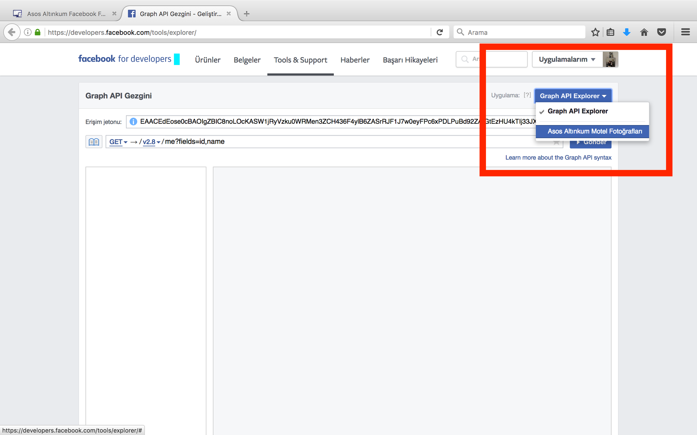
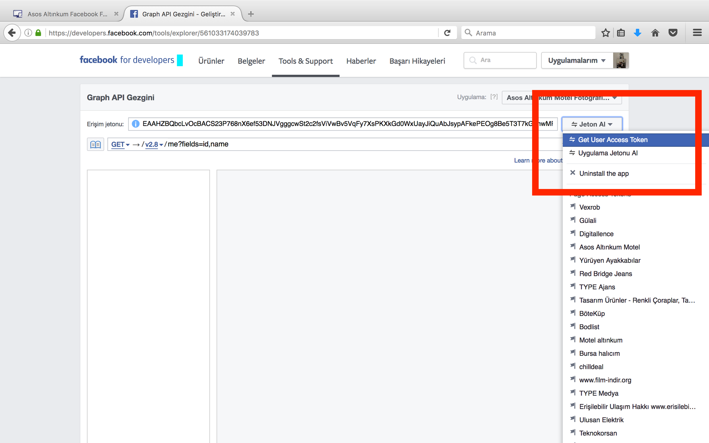
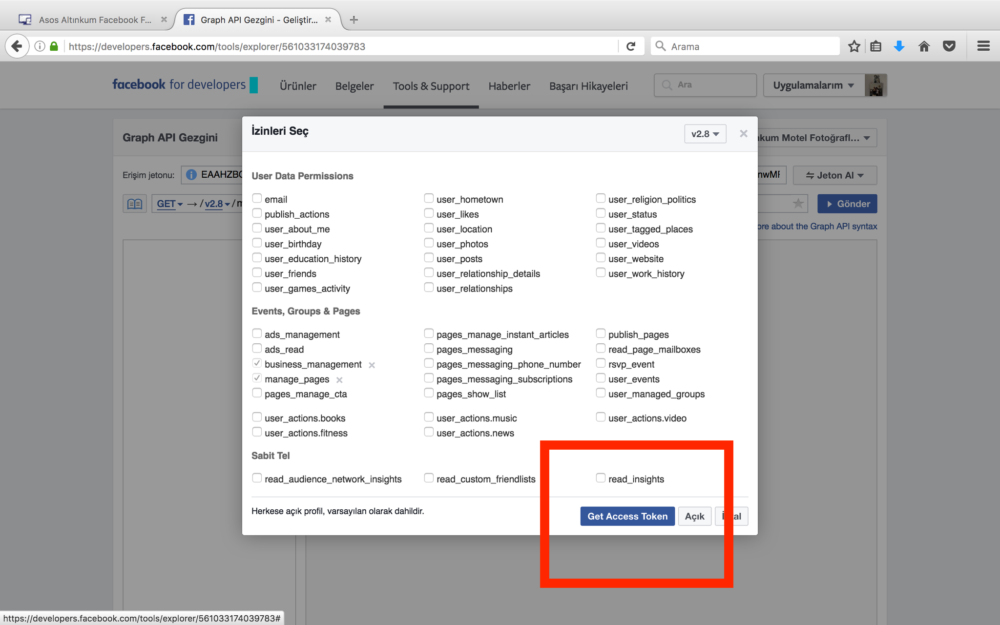
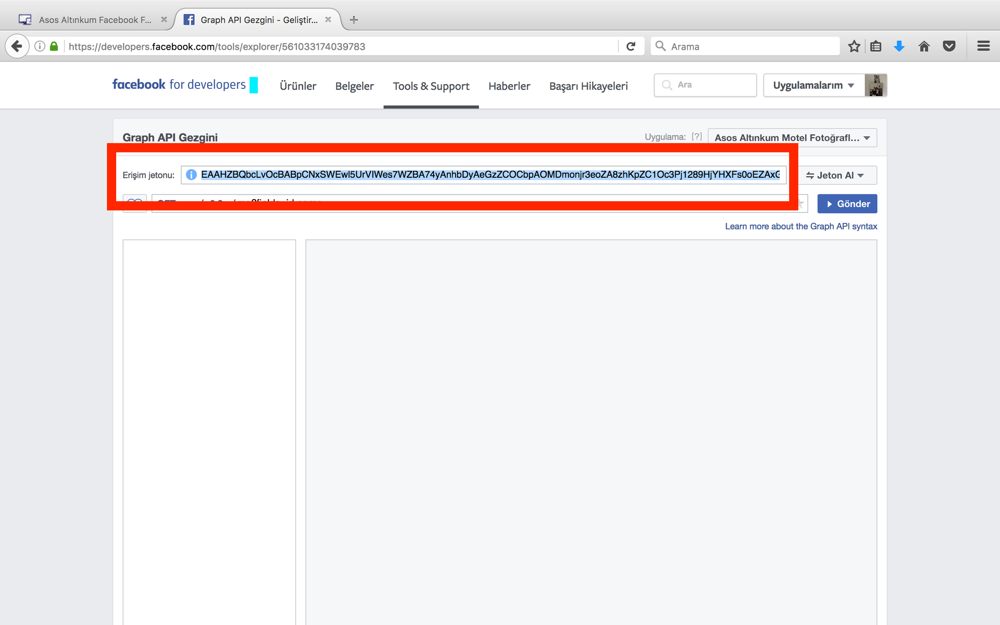

2 - Sağ üst köşede "Graph API Exporer" butonun üzerine tıklayıp altta çıkan "Asos Altınkum Motel Fotoğraflarını" tıklayın.

3 - Asos Altınkum Fotoğrafları seçildikten sonra sayfa yenilenecektir. Daha sonra hemen altında bulunan Jeton Al üzerine tıklayıp altta çıkan Get User Access Token'a tıklayın

4 - Açılan pencerede altta mavi renkli Get Access Token butonuna tıklayın.

5 - Sayfa yenilendikten sonra Erişim Jetonu yazan yerdeki jeton kodunu kopyalayın.

6 - asosaltinkummotel.com/update sayfasındaki jeton alanına kopyaladığınız kodu yapıştırın ve kaydet butonuna basın.
Hepsi bu kadar. Artık sitede facebook fotoğrafları 2 ay süreyle görünecektir.